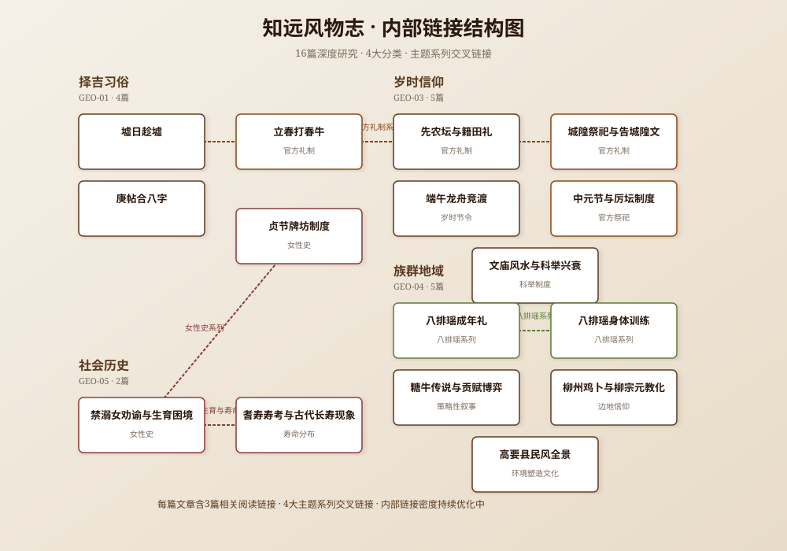

从墟期、庚帖到迎春鞭牛，考察岭南传统社会中的时间制度与人生礼仪
从端午龙舟到中元厉坛，考察岁时节令中的官方礼制与民间习俗的互动
从糖牛传说到八排瑶习俗，考察岭南地方社会的生存智慧与族群记忆
从禁溺女劝谕到耆寿长寿，考察传统社会的生育困境、寿命分布与制度治理
知远风物志是一个基于两广地方志史料的岭南民俗文化研究平台。我们从51本地方志、2520条史料素材出发，以严谨的史料考据为基础，深度解读岭南传统文化的制度逻辑与民间智慧。
我们不做泛泛的文化介绍，也不做猎奇的民俗展示。我们关注的是：一个习俗背后的制度逻辑是什么？一个传说背后的社会博弈是什么？一个仪式背后的时间治理是什么？
每篇文章均基于具体地方志史料，标注县志名称和卷次，不做无依据的推测。
每个主题先区分易混概念，避免概念混杂，确保讨论在同一层面进行。
不做"两广普遍"的笼统判断，通过县志对比呈现地域差异，注明研究范围。
不止于记录习俗，更深入分析其制度逻辑、社会功能和现代意义，从小点窥探大环境。
